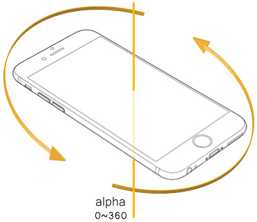
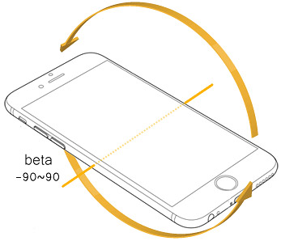
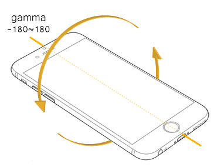

要使用行动装置的陀螺仪，只需要监听deviceorientation的事件就可以，用法和click一样
window.addEventListener('deviceorientation', function(event) {
var alpha = event.alpha;
var beta = event.beta;
var gamma = event.gamma;
}, false);
deviceorienratation有三个API，分别是：alpha, beta和gamma
行动装置水平放置时，绕Z轴旋转的角度，数值为0～360度
行动装置水平放置时，绕X轴旋转的角度，数值为-90～90度
行动装置水平放置时，绕Z轴旋转的角度，数值为-180～180度

alpha:
beta:
gamma: